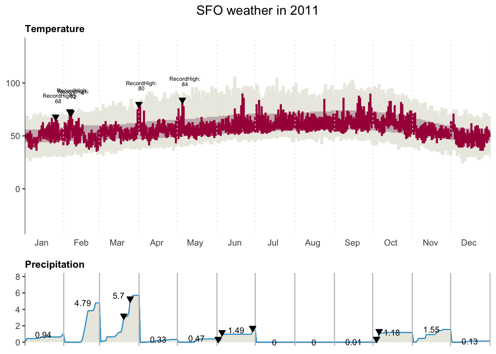
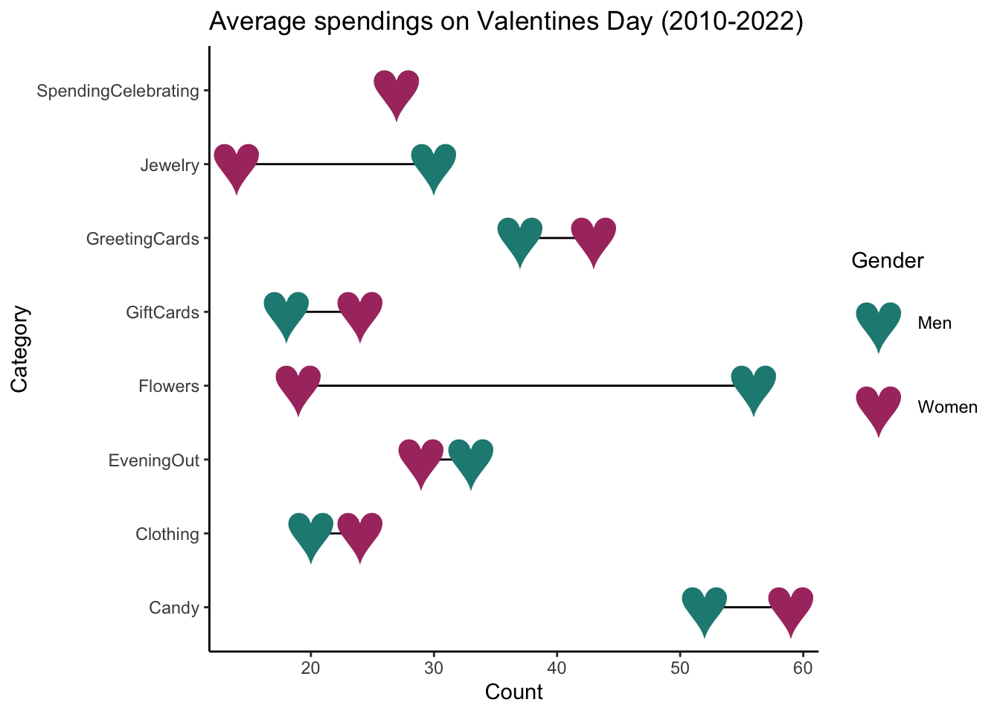

Error: <text>:15:1: unexpected '<'
14: legend.text = element_text(size=5))
15: <
^I believe that effective data storytelling can convey information more smoothly and efficiently. Over the years, I have focused on enhancing my visualization skills to achieve this. Below are some examples of my work.

